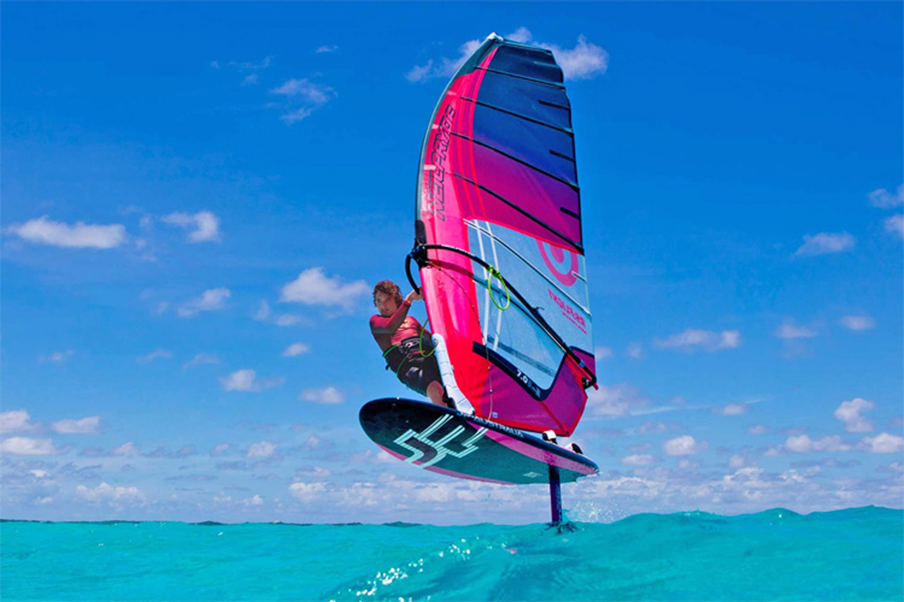

Julien Quentel wins the 2017 Défi Wind Caribbean
22 June 2017 | Windsurfing
Julien Quentel and Maëlle Guilbaud have taken out the 2017 Défi Wind Caribbean, in Bonaire.
The event opened with winds in the 25-knot range. A total of 45 windsurfers completed three 20-kilometer races in the flat and blue Caribbean waters along Te Amo beach, from the airport to the marina.
The second edition of the Défi Wind Caribbean was blessed by the local weather conditions. Bonaire is located 40 miles aways from Venezuela and offers consistent trade winds all year-round.
The second day of competition got underway along the beautiful Pink Beach, where riders accelerated in around 20-22 knots of wind for a 22-kilometer race. The turquoise waters and the white sands made the scenario perfect for windsurf racing.
The wind picked up for the final day, and windsurfers had to cope with extreme conditions to finish their last race.
Taty Frans ended up winning eight races, but two disastrous performances cost him the overall title. Quentel took out two bullets but finished in the top 5 in the remaining races, so he was crowned champion.
On the ladies' division, the Guilbaud family claimed all honors by taking first and second places.
Australia JP presents the HydroFoil range

05 July 2017 | Windsurfing
The world of windsurfing is quickly moving toward foiling, and JP Australia is already releasing two specific board shapes.
Jason Polakow is a man ahead of his time, and his brand has always been associated with cutting edge technology and design that fits the needs of windsurfers.
JP Australia head shaper, Werner Gnigler, is a man with a lot of experience when it comes to developing gear for freestyle, freeride, wave, and race.
"The 135 could be called an all-around foil board. It makes foiling easy and accessible for everyone who wants to experience the feeling of flying over the water," says Gnigler.
"It has a shape that fits all levels, from beginner to professional. It has a very wide wind range, and you can also use it with a normal fin. It's almost as fast as the Super Sport."
The 155 was developed in cooperation with NeilPryde. The board features a high-performance foil with an extra wide tail, providing a large planing surface. It can be used with bigger sails.
"I started foiling in 2016, and enjoy it a lot. The 155 is very good in light winds, but it also works very well in strong winds. It is also a nice board for going upwind," notes Olympic windsurfer Julien Bontemps.
Australia JP presents the HydroFoil range
05 July 2017 | Windsurfing
The world of windsurfing is quickly moving toward foiling, and JP Australia is already releasing two specific board shapes.
Jason Polakow is a man ahead of his time, and his brand has always been associated with cutting edge technology and design that fits the needs of windsurfers.
JP Australia head shaper, Werner Gnigler, is a man with a lot of experience when it comes to developing gear for freestyle, freeride, wave, and race.
"The 135 could be called an all-around foil board. It makes foiling easy and accessible for everyone who wants to experience the feeling of flying over the water," says Gnigler.
"It has a shape that fits all levels, from beginner to professional. It has a very wide wind range, and you can also use it with a normal fin. It's almost as fast as the Super Sport."
The 155 was developed in cooperation with NeilPryde. The board features a high-performance foil with an extra wide tail, providing a large planing surface. It can be used with bigger sails.
"I started foiling in 2016, and enjoy it a lot. The 155 is very good in light winds, but it also works very well in strong winds. It is also a nice board for going upwind," notes Olympic windsurfer Julien Bontemps.